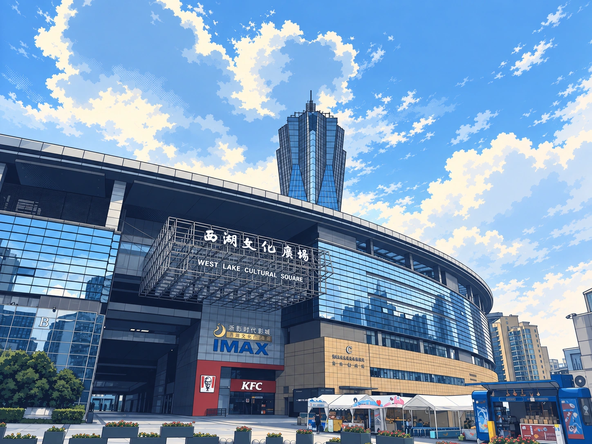
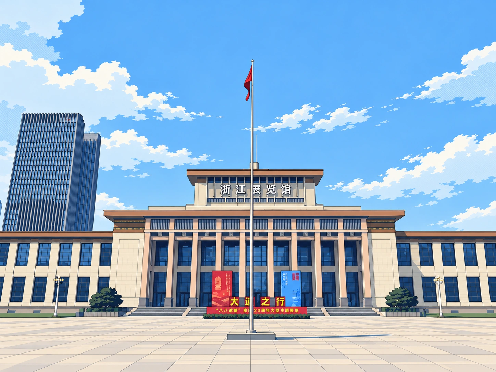
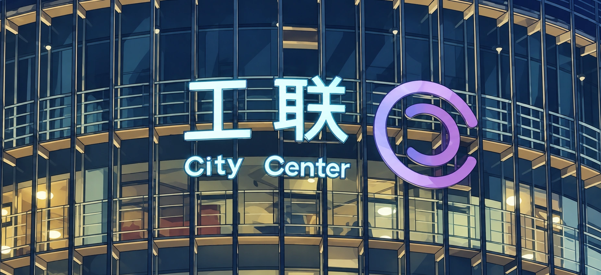
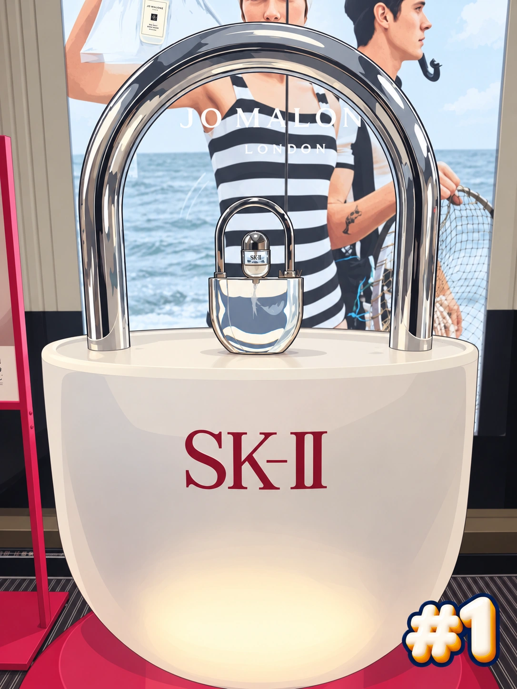

01 / 附件 3
西湖文化广场
保留弧形外立面、塔楼、广场招牌和入口。

按游戏区域 1 → 2 → 3 排列，不按附件顺序。统一赛璐璐美术化，保留定位与角度线索；开场图不加 # 编号、不占任务格。点图可查看清晰成品，按钮可切换原照片。
保留弧形外立面、塔楼、广场招牌和入口。

保留馆名、中央旗杆和立面，移除原 #1。

保留工联文字、紫色标志及原横幅构图。


银灰金属赛璐璐处理，保留锁拱、SK-II 和背后 JO MALONE 广告，右下角为胖 3D #1。
五张 Bingo 共用此图，各盘仍为 19 图寻 + 6 直接任务；格位、任务内容、分值与难度配置均不变。
活动前需确认 SK-II 商场展陈仍在原位。新赛局自动载入三张开场图；已有赛局由工作人员在后台点击载入，待审提交保留原参考图快照。